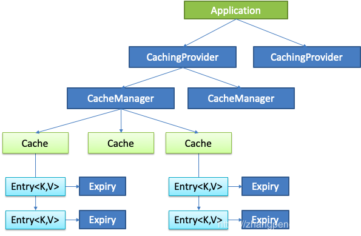

上一篇整体但粗略聊了聊 Spring Cache 的实现，这篇开始准备聊聊细节，就从 Spring Cache 的配置注入方式聊起吧。
换句话说，虽然聊的是 Spring Cache 源码，但这块其实主要聊的是 Spring Framework 的 Configuration 配置和动态代理相关的内容。
Spring Cache 的配置方式
@EnableCaching
众所周知，Spring Cache 的启用方式是 @EnableCaching 注解，我们看下源码：
1 | (ElementType.TYPE) |
可以看到其 Import 了一个 CachingConfigurationSelector，同时定义了三个字段。其中 proxyTargetClass 和 mode 是用于动态代理的配置项，order 是用于启动顺序的配置项。
CachingConfigurationSelector
CachingConfigurationSelector 实现于 AdviceModeImportSelector<EnableCaching>，根据注解中 mode 代表的 Advice 模式选择 import 不同的 bean。
已经了解 AdviceModeImportSelector 或不关心细节的读者可以跳过下面这个子模块。
AdviceModeImportSelector<T>
要聊 AdviceModeImportSelector，必须先聊聊他实现的接口 ImportSelector。
先看看其源码：
1 | public interface ImportSelector { |
selectImports 方法需要实现根据 importingClassMetadata 的元信息返回不同的类名数组。
不妨看看 AdviceModeImportSelector 是怎么实现的：
1 |
|
我们一句句解析。
首先 GenericTypeResolver.resolveTypeArgument(getClass(), AdviceModeImportSelector.class) 的作用是取到该类在 AdviceModeImportSelector 上的泛型类型，对于 CachingConfigurationSelector 而言，其继承的是 AdviceModeImportSelector<EnableCaching>，所以返回的 annType 就是 EnableCaching.class。
第二句 AnnotationConfigUtils.attributesFor(importingClassMetadata, annType)，importingClassMetadata 表示的是导入类的元信息（比如实际使用时我们可能将 @EnableCaching 注解在某个 Configuration 类或 Starter 类上，Spring Framework 中的 ConfigurationClassParser 会在处理这个 Configuration 类或 Starter 类的所有 @Import 注解时带入该配置类本身的元信息（可见于 org.springframework.context.annotation.ConfigurationClassParser#processImports 方法），并最终传递至 selectImports 方法的 importingClassMetadata 参数），该方法会返回配置类上 @EnableCaching 注解中的实际参数 Map（AnnotationAttributes 继承自 LinkedHashMap<String, Object>）。
后面是对结果判空，跳过。
第四句，AdviceMode adviceMode = attributes.getEnum(getAdviceModeAttributeName())，其中 getAdviceModeAttributeName() 返回一个常量字符串 mode，所以这句话会取到 @EnableCaching 注解中 mode 的值，保存在 adviceMode 中。
第五句，根据 adviceMode 选择不同的 bean 的类名数组，这个 selectImports 方法是 AdviceModeImportSelector 的抽象方法，交给子类实现。
第六和第七句，判空并返回。
CachingConfigurationSelector 的 selectImports 实现
1 |
|
方法本身很简单，交给 getProxyImports 和 getAspectJImports 选择不同的动态代理模式的类名。
先看两个配置项：
1 | private static final String PROXY_JCACHE_CONFIGURATION_CLASS = |
关于什么是 JSR 107 标准和 JCache 详细的此处不再赘述，更多资料可自行搜索。简单来说就是 JSR 107 规定了一套 JCache API 规范，如下图所示：

jsr107Present 和 jcacheImplPresent 都为 true 时表示需要启用 jcache 支持。
对于 Proxy 模式，注入的是 AutoProxyRegistrar 和 ProxyCachingConfiguration（如果启用 JCache 还注入 ProxyJCacheConfiguration）：
1 | private static final String PROXY_JCACHE_CONFIGURATION_CLASS = |
对于 AspectJ 模式，注入的是 AspectJCachingConfiguration （如果启用 JCache 还注入 AspectJJCacheConfiguration）：
1 | private static final String CACHE_ASPECT_CONFIGURATION_CLASS_NAME = |
通常而言，我们使用的是默认的 Proxy 方式，且不会使用到 JCache。也就是说只注入了 AutoProxyRegistrar 和 ProxyCachingConfiguration。
再说一说这个 AutoProxyRegistrar 类，其实也是一个与 cache 功能无关的类，其功能源码如下：
1 |
|
文档的注释直接翻译过来是这样：
针对给定的注册表注册，升级和配置标准自动代理创建器（APC）。通过查找在
@Configuration具有 mode 和 proxyTargetClass 属性的导入类上声明的最接近的注释来工作。如果 mode 设置为 PROXY，则注册 APC；如果 proxyTargetClass 设置为 true，则 APC 被强制使用子类（CGLIB）代理。几个
@Enable*注释同时公开 mode 和 proxyTargetClass 属性。重要的是要注意，大多数这些功能最终都共享一个 APC。因此，此实现并不“在乎”它找到的批注的确切含义——只要它公开了权限 mode 和 proxyTargetClass 属性，就可以对 APC 进行相同的注册和配置。
看一下代码，头两行与 AdviceModeImportSelector 的 selectImports 实现类似，由 candidate 拿到注解里的参数。
接下来判断需要存在 mode 和 proxyTargetClass 参数且类型分别是 AdviceMode 和 Boolean，则置 candidateFound 标识位为 true，说明找到了对应的自动代理配置的注解。
如果 mode 是 PROXY 模式，则调用 AopConfigUtils.registerAutoProxyCreatorIfNecessary(registry) 方法，如果 proxyTargetClass （为 true 时强制全部使用 CGLIB，为 false 时对实现了接口的使用 JDK 动态代理，没有接口的使用 CGLIB），再调用 AopConfigUtils.forceAutoProxyCreatorToUseClassProxying(registry) 方法。
这个 AopConfigUtils.registerAutoProxyCreatorIfNecessary(registry) 方法内部追踪下去就是调用了一句 registerOrEscalateApcAsRequired(InfrastructureAdvisorAutoProxyCreator.class, registry, null)。内部功能代码：
1 | public static final String AUTO_PROXY_CREATOR_BEAN_NAME = |
其中这个 findPriorityForClass 就是取了 class 在数组里的下标：
1 | private static final List<Class<?>> APC_PRIORITY_LIST = new ArrayList<Class<?>>(3); |
也就是说，registerOrEscalateApcAsRequired 方法会将 cls 注册为 org.springframework.aop.config.internalAutoProxyCreator，如果再次注册了 AspectJAwareAdvisorAutoProxyCreator 乃至 AnnotationAwareAspectJAutoProxyCreator，那么后者会顶替前者成为 internalAutoProxyCreator。同级别乃至更低级别则不会再顶替。
注：AnnotationAwareAspectJAutoProxyCreator 会在启用 @EnableAspectJAutoProxy 注解时注入。
而被注册的这个 InfrastructureAdvisorAutoProxyCreator 不再深挖，简单来说他会只注册所有定义上有 role = BeanDefinition.ROLE_INFRASTRUCTURE 的 advisor bean。
如果 proxyTargetClass 时执行的 AopConfigUtils.forceAutoProxyCreatorToUseClassProxying(registry) 定义如下：
1 | public static void forceAutoProxyCreatorToUseClassProxying(BeanDefinitionRegistry registry) { |
简单来说就是在 bean 定义上添加了一条 proxyTargetClass=true 的属性。